بسم الله الرحمن الرحيم
Sayyid Abul Ala Maududi - Tafhim al-Qur'an - The Meaning of the Qur'an
 45.
Surah At Jathiya (The Kneeling)
45.
Surah At Jathiya (The Kneeling)
It is derived from the sentence wa tartt kullu ummat- in jathiyat-un of verse 28, implying thereby that it is the Surah in which the word jathiyah has occurred.
The period of the revelation of this Surah also has not been mentioned in any authentic tradition, but its subject matter clearly shows that it was revealed consecutively after Surah Ad Dukhan. The close resemblance between the contents of the two Surahs makes them look like the twin Surahs.
It answers the doubts and objections of the disbelievers of Makkah about Tauhid and the Hereafter and warns them for their attitude that they had adopted against the message of the Qur'an.
The discourse begins with the arguments for Tauhid. In this connection, reference has been made to the count- less Signs that are found in the world, from man's own body to the earth and heavens, and it is pointed out that everywhere around him man finds things which testify to Tauhid which he refuses to acknowledge. If man sees carefully the variety of animals, the day and night, the rainfall and the vegetation thereby, the winds and his own creation, and ponders over them intelligently, without prejudice, he will find these Signs sufficiently convincing of the truth that this universe is not Godless, nor under the control of many gods, but it has been created by One God, and He alone is its Controller and Ruler. However, the case of the person who is determined not to acknowledge and wants to remain involved in doubts and suspicions is different. He cannot be blessed with the faith and conviction from anywhere in the world.
A little below, in the beginning of the second section, it has been reiterated that the things man is exploiting in the world, and the countless forces and agencies that are serving his interests in the universe, did not come into being just accidentally, nor have they been provided by the gods and goddesses, but it is One God alone, Who has supplied and subjected these to him from Himself. If only a person uses his mind properly and rightly, his own intellect will proclaim that God alone is man's real Benefactor and He alone deserves that man should pay obeisance to Him.
After this, the disbelievers of Makkah have been taken to task and reproved for their stubbornness, arrogance, mockery and insistence on disbelief with which they were resisting the invitation of the Qur'an they have been warned that this Qur'an has brought the same blessing which had been granted to the children of Israel before, by virtue of which they became distinguished above all the people of the world. Then, when they failed to recognize the true worth of this blessing and disputed their religion and lost it, this blessing now has been sent to them. This is such a code of guidance which shows the clear highway of Religion to man. The people who would turn it down by their own folly, would only prepare for their own doom, and only such people would become worthy of God's succour and mercy who would adopt obedience to it and lead a life of piety and righteousness.
In this connection, the followers of the Holy Prophet have been instructed that they should forbear and pardon the absurd and foolish behavior towards them of the people fearless of God, for if they showed patience God Himself would deal with their opponents and would reward them for their fortitude.
Then, there is a criticism of the erroneous ideas that the disbelievers hold about the Hereafter. They said that life was only this worldly life there was no life hereafter. Man dies in the course of time just as a watch stops functioning suddenly. The body is not survived by any soul, which might be seized and then breathed again into the human body some time in the future. In this regard, they challenged the Holy Prophet, saying: "If you lay a claim to this, then raise our dead forefathers back to life." In answer to this, Allah has given the following arguments:
"You do not say this on the basis of any knowledge but are uttering this grave thing on the basis of conjecture. Do you really have the knowledge that there is no other life after death, and the souls are not seized but are annihilated?"
"Your this claim rests mainly on this that you have not seen any dead person rising back to life and returning to the world. Is this basis strong enough for a person to make a claim that the dead people will never rise to life?When you do not experience and observe a thing, does it mean that you have the knowledge that it does not exist at all?
It is utterly against reason and justice that the good and the bad, the obedient and the disobedient, the oppressor and the oppressed, should be made equal ultimately. Neither a good act should bear a good result nor an evil act an evil result; neither the grievances of the oppressed be redressed nor the oppressor be punished, but everyone should meet with the same fate ultimately. Whoever has formed this view about the universe of God, has formed a patently wrong view. The unjust and wicked people adopt this view because they do not want to face the evil results of their deeds, but this world of God is not a lawless kingdom; it is rather a system based on the Truth, in which there can be no question of the injustice of regarding the good and the bad as equal.
That the creed of the denial of the Hereafter is highly destructive of morals. This is adopted only by such people as are the slaves of their lusts, and for the reason that they should have full freedom to serve their lusts. Then, when they have adopted this creed, it goes on making them more and more perverse till at last their moral sense becomes dead and all avenues of guidance are closed against them.
After giving these arguments Allah says most emphatically: "Just as you did not become living of your own accord, but became living by Our power, so you do not die of your own accord, but die when We send death on you. And a time is certainly coming when you will all be gathered together. If you do not believe in this because of your ignorance and folly today, you may not; when the time arrives, you will see for yourself that you are present before your God and your whole book of conduct is ready accurately, which bears evidence against each of your misdeeds. Then you will come to know how dearly has your denial of the Hereafter and your mockery of it cost you."

In the name of Allah, the Compassionate, the Merciful.
[1-2] Ha-Mim. The revelation of this Book is from Allah, the All-Mighty, the All-Wise.1
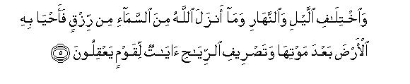
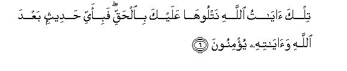
[3-6] The fact is that there are countless Signs in the heavens and the earth for those who believe.2 And in your own creation and in the animals, whom Allah is scattering (all over the earth), there are signs for those who affirm faith.3 And in the difference of the night and day,4 and in the provisions5 that Allah sends down from the heaven, whereby He revives the earth after its death,6 and in the circulation of the winds,7 there are many signs for those who use their common sense. These are the Revelations of Allah, which We are rehearsing to you accurately. Then, what is there after Allah and His Revelations in which they will believe.8
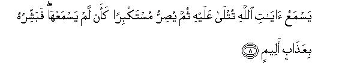
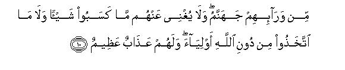
[7-10] Woe to every lying, sinful person before whom the Revelations of Allah are recited and he hears them, yet he persists in his disbelief arrogantly as if he never heard them.9 Give such a one the good news of a painful torment. When something of Our Revelations comes to his knowledge, he takes it in jest.10 For all such people there is an abasing torment. They have Hell in front of them.11 Nothing of what they have earned in the world will avail them anything, nor those whom they have taken for guardians instead of Allah.12 There is a great punishment for them.
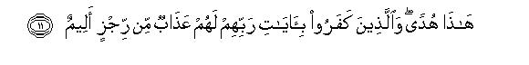
[11] This Qur'an is true Guidance, and for those who have refused to believe in the Revelations of their Lord, there is the torment of a terrible scourge.
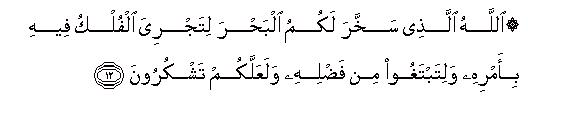
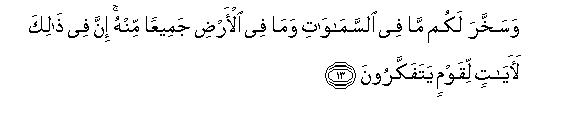
[12-13] Allah it is Who subjected to you the ocean so that ships may sail in it by His Command,13 and you may seek His bounty14 and be grateful to Him. He subjected to you everything that the heavens and the earth contain,15 all from Himself.16 There are many signs in this for those who think.17
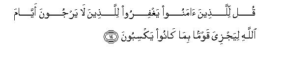
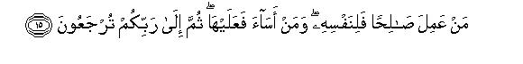
[14-15] O Prophet, tell the believers to pardon the errors of those who do not tear the coming of the evil days from Allah,18 so that Allah may Himself recompense a group for what they have earned.19 Whoever does good will do so for himself, and whoever does evil will himself bear its burden. To your Lord you have all to return!
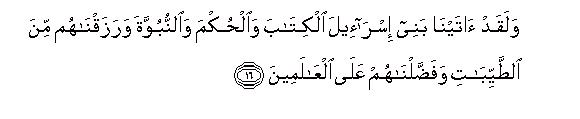
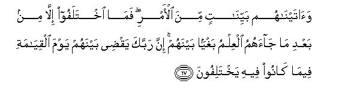
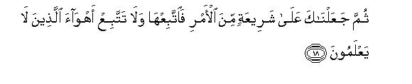
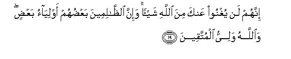
[16-20] Before this We had bestowed on the children of Israel the Book and the Judgment20 and the Prophethood. We blessed them with good21 things of life; We exalted them above all the people of the world, and gave them clear instructions with regard to religion. Then they differed among themselves (not because of ignorance but) after the Knowledge had come to them, only because they wanted to wrong one another.22 Your Lord will judge between them on the Day of Resurrection concerning the matters in which they have been differing. After this We have set you,O Prophet, upon a clear highway (of the Shari `ah) concerning religion.23 So follow it, and do not follow the lusts of those who have no knowledge. They cannot avail you at all against Allah.24 The wrongdoers are companions of one another and the Companion of the righteous is Allah. These are the lights of discernment for all mankind and guidance and mercy for those who affirm the faith.25
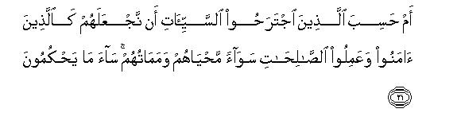
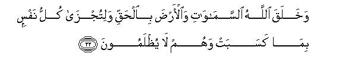
[21-22] Do26 those who have committed evil, think that We shall hold them and those who have believed and done right as equal, so that their life and their death should be alike? Evil indeed are the judgments they pass!27 Allah has created the heavens and the earth with the truth28 in order that each living being be rewarded for what it has earned. The people shall not be wronged at all.29
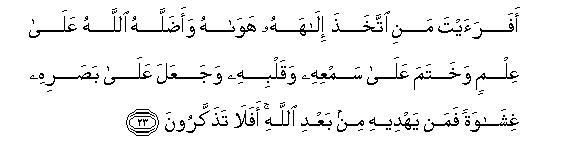
[23] Then, have you ever considered the case of the person who made his lust his god,30 and Allah, in spite of knowledge,31 let him go astray and set a seal upon his heart and cars and laid a covering on his eyes?32 Who is there after Allah Who can guide him? Do you learn no lesson?33
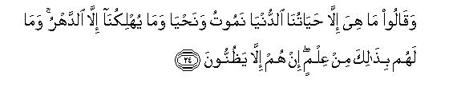
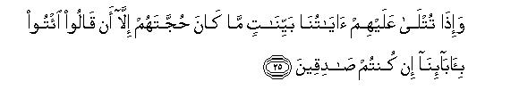
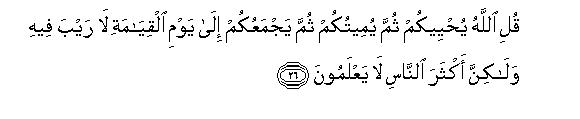
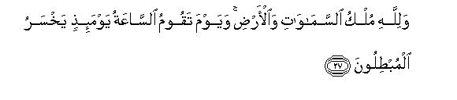
[24-27] They say, "Life is only this worldly life of ours. Here we shall die and live and nothing but the change of time destroys us." In fact, they have no knowledge concerning this. They merely guess.34 And when Our clear Revelations are recited to them,35 their only argument is that they say, "Bring back our forefathers if you are truthful."36 O Prophet, say to them, "It is Allah Who gives you life, then He it is Who causes your death,37 then He it is Who will gather you together on the Day of Resurrection, which is sure to come,38 but most people do not know.39 To Allah belongs the Sovereignty of the heavens and the earth,40 and the Day the Hour of Resurrection arrives, the worshipers of falsehood on that Day shall be doomed to loss."
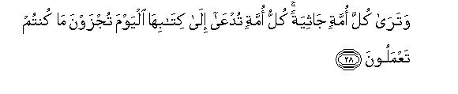
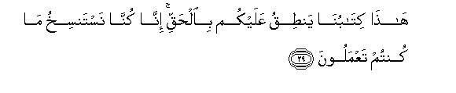
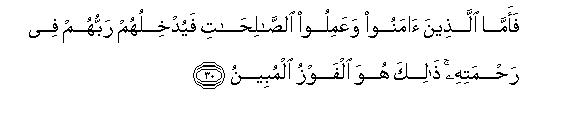
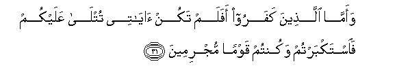
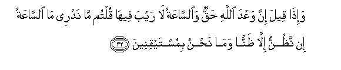
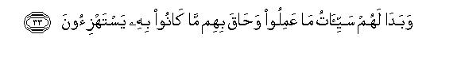
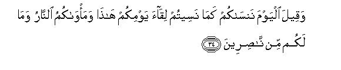
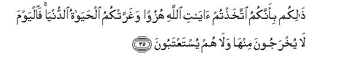
[28-35] At that time you will see every nation on their knees.41 Each nation will be summoned to see its record. It will be said to them, "Today you shall be rewarded for what you have done. This is a record which We have prepared: it gives true evidence against you. We were recording all your deeds."42 Then, those who had believed and done righteous deeds, their Lord shall admit them to His mercy; this is the manifest success! And to those who had disbelieved, it will be said: '`Were not My Revelations recited to you? But you showed arrogance43 and became criminals. And when it was said, “Allah's promise is true and there is no doubt about the coming of Resurrection,” you used to say, “We do not know what Resurrection is: we do only guess: we are not certain.”44 The evils of their deeds then will become manifest to them45 and they will be encompassed by the same that they used to mock. It will be said to them, "We will today forget you even as you yourselves had forgotten the meeting of this Day. Your abode now is Hell and there is none to help you. You have met this fate because you took Allah's Revelations in jest, and the life of the world deluded you. Therefore, neither shall they be taken out of Hell today, nor shall they be asked to snake amends and please their Lord."46
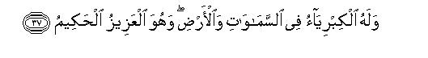
[36-37] So, praise is for Allah alone, Who is the Lord of the heavens and the earth and the Lord of all the worlds. To Him belongs Greatness in the heavens and the earth, and He alone is the All-Mighty, the All-Wise.
1In this brief introduction to the Surah, the listeners have been warned of two things:
(1) That this Book is not the composition of Muhammad (upon whom be Allah's peace) himself, but it is being sent down to him by Allah; and
(2) that it is being sent down by that Allah Who is All-Mighty as well as All-Wise. His being the Almighty demands that man should not dare disobey His Commands, for if he disobeys Him, he cannot escape His punishment; and His being the All-Wise demands that man should obey and follow His Guidance and His Commands with full satisfaction and willingness of the heart, for there can be no possibility of His teachings being wrong or inadequate or harmful in any way.
2To begin the discourse like this after the introduction, indicates that in the background there are the objections of the people of Makkah, which they were raising against the teachings of the Holy Prophet. They said: 'After all, how can we believe this one man when he says that all those great beings to whose shrines we have been dedicated and devoted so far, are nothing and that Godhead belongs to only One God?" About this it is being said that the world is replete with the signs of the Reality to which they are being invited. If on]y they saw with open eves, they would find those signs in themselves and outside them everywhere, which testify that this whole universe is the creation of One and only One God, and He alone is its Master and Ruler and Controller. It didn't need to be pointed out what was the nature of the signs in the earth and heavens, for the dispute at that time centered around the point that the polytheists were insisting on believing in other gods and deities also besides Allah and the Qur'an gave the message that there was neither a god nor a deity beside One God. Therefore, it was apparent by itself from the content that the signs were of the truth of Tauhid and of the refutation of shirk.
As for the sentence: "The signs are for those who believe," it means that although the signs arc meant for all human beings, only those people can reach the right conclusion from their observation, who are inclined to believe; as for the heedless people, who live like animals and the stubborn people who are resolved not to believe, the existence and the non-existence of the signs is equal. The splendor and beauty of the garden is for those who can see; a blind man cannot perceive any splendor and beauty; for him even the existence of the garden is meaningless.
3That is, "The case of those who have made up their minds not to believe, or of those who have chosen for themselves to remain lost in the blind alleys of doubt, is different, but when those who have not locked up their hearts against belief and conviction, will consider seriously their own creation, the structure of their own body, and the variety of animals found on the earth, they will see countless such signs as will leave no doubt in their minds that all this did not come into being without a God, or that it stood in need of more than one Cod for its creation. (For explanation, see A1 An`am: 37-38, An-Nahl: 5.8, AI-Hajj: 57, AI-Mu'minun: 12-14, AI-Furqan: 54, Ash-Shu'ara': 78-81, An-Naml: 64, Ar-Rum: 20-21, 54, E.N.'s 14 to 18 of As-Sajdah, Ya Sin: 71-73, Az-Zumar: 6, and E.N.'s 97, 98,110 of Al-Mu'min).
4The difference of the night and day is a sign because one follows the other with full regularity, because one is bright and the other dark, because over a certain period the day goes on shortening and the night lengthening gradually till the two become equal in duration, then again the day goes on lengthening and the night shortening till the two again become equal in duration. These different kinds of variations found in the night and the day and the great aspects of wisdom that accrue from these, arc a clear pointer to the fact that the Creator of the sun and the earth and of every thing on the earth is one and that one AII-Powerful Being is keeping both these spheres under His control; that that Being is not deaf and blind and unwise but All-Wise, Who has established this unalterable system and made His earth a suitable place for the countless species of life, which He has created here in the form of vegetables, animals and men. (For explanation, see Yunus: 67, An Naml: 86, Al-Qasas: 71-73, Luqman: 29 and E.N. S0, Ya Sin: 37 and E.N. 32)
5"Provisions": rainfall as becomes evident from the following sentence.
6For explanation, see Al-Mu'minun: 18-20, Al-Furqan: 48-49, AshShu'ara': 7, An-Naml: 61, Ar-Ruth: 24, 48, Ya Sin: E.N.'s 26 to 31.
7The circulation of the winds implies the circulation of the different kinds of winds at different times, on different parts of the earth and at different heights, which cause change of the seasons. What deserves attention is not only that above the surface of the earth there is a thick atmosphere, which contains all those elements needed by living beings for breathing, and this thick covering has kept the earth's population safe from many of the heavenly calamities. Besides, another noteworthy thing is that the air is not just filled inertly in the atmosphere, but it blows occasionally in different ways. Sometimes a cool wind blows and sometimes a hot wind; sometimes it stops blowing and sometimes it starts blowing; sometimes it blows soft and sometimes strong, and sometimes it assumes the proportions of a storm, sometimes a dry wind blows and sometimes a moist wind; sometimes it brings the rain and sometimes it drives away the clouds. These different kinds of the winds do not blow without a purpose, but under a law and a system, which testifies that this arrangement is based on perfect wisdom, and it is serving great objectives. Then it is deeply related with coolness and heat, which go on increasing and decreasing according to the changing conditions and relationships between the earth and the sun. Furthermore, it has a deep relation with the seasonal changes and the distribution of the rain. All these facts proclaim that these arrangements have not been made haphazardly by some blind nature, nor have the sun and the earth and the air and water and vegetation and animals separate controllers, but inevitably One God alone is the Creator of them all, and it is His Wisdom that has established this system for a great objective, and it is His power that it is functioning regularly according to a pre-ordained law.
8That is, "When these people have not believed even after Allah's own arguments have been presented for His Existence and His Unity, what else can be there by which they will gain the faith ? For Allah's Word is the final thing by which a person can attain to this blessing, and the maximum of the rational arguments that could possibly be given to convince someone of an unseen reality have been presented in this Divine Word. In spite of this if a person is bent upon denial, he may persist in his denial, for his denial cannot change the reality."
9In other words, there is a marked difference between the person who listens to Allah's Revelations sincerely with an open mind and ponders over them seriously and the person who listens to them resolved that he would deny them, and then persists in the resolve already made without any serious thought. If the first person does not believe in the Revelations immediately, it does not mean that he wants to remain an unbeliever, but because he wants to have greater satisfaction. Therefore, even if he is taking time to believe, it is just possible that another Revelation might enter his heart and he might believe sincerely with full satisfaction. As for the other person, he would never believe in any Revelation whatever, for he has already locked his heart up to every Revelation of Allah. In this state such people generally arc involved as arc characterized by the following three qualities:
(1) They are liars; therefore, the truth does not appeal to them;
(2) they are wrongdoers; therefore, it is very hard for them to believe in a teaching or guidance that may impose moral restrictions on them; and
(3) they are involved in the conceit that they know everything, and that none can teach them anything; therefore, they do not regard as worthy of attention and consideration Allah's Revelations that are recited to them, and it is all the same for them whether they listen to there or not.
10That is, "He dons not rest content with mocking any one particular Revelation, but mocks all the Revelations. For example, when he hears that a particular thing has been mentioned in the Qur'an, he does not take it in its straight-forward meaning, but first puts a crooked meaning on it in order to make it a subject of ridicule and mockery, then after making fun of it, says: "These arc strange things: one daily hears one or the other funny thing from them. "
11The word wara' is used for every such thing as is hidden from man, whether it is before. him or behind him. Therefore, another translation can be: "They have Hell behind them." In the first case, the meaning would be: "They are unconsciously running on this way and have no idea that there is Hell in front of them in which they would fall ; " in the second case, it would mean: "They are engaged in this mischief of theirs, thoughtless of the Hereafter, and they have no idea that Hell is in pursuit of them."
12Here, the word wali (guardian) has been used in two meanings;
(1) For those gods and goddesses and living and dead guides about whom the polytheists thought that anybody who was devoted to them, would escape Allah's punishment, whatever he might have done in the world, for their intercession will save them from Allah's wrath; and
(2) for those chiefs and leaders and rulers whom the people took as their guides and patrons independent of God and followed them blindly and tried to please them even if they had to displease God.
This verse warns all such people that when they will face Hell in consequence of this way of lift, neither of the two kinds of the guardians will come forward to save them from it. (For further explanation, see E. N . 6 of Surah Ash- Shura).
13For explanation, see Bani Isra'il: 66-67, Ar-Rum: 46 and the corresponding E.N.'s, and E.N. 55 of Luqman, E.N. 110 of Al Mu'min, and E.N. 54 of Ash-Shura.
14"Seek His bounty": Seek lawful provisions by trade, fishing, diving, navigation and other means in the sea.
15For explanation, see Ibrahim: 32 and E.N. 44 on it, and E.N. 35 of Luqman.
16This sentence has two meanings:
(1) `This gift and favor of Allah is not like the gift of the worldly kings, who favor their favorites with the wealth that they have collected from the people themselves, but, on the contrary, all the good things, in the universe have been created by Allah Himself, and He has granted these to man from Himself ; " and
(2) `neither is anyone a partner of Allah in the creation of these good things, nor has anyone anything to do in making them subservient to man. Allah alone is their Creator and He alone has granted these to man from Himself. "
17That is, `In their subjection and in making them beneficial for man there are many signs for those who think and reflect. These signs clearly point to the truth that the Creator and Master and Administrator of everything and of every power in the universe, from the earth to the heavens, is One God alone Who has subjected them to a law; and that God alone is Lord of man Who has made all these things and powers favorable and helpful for man's life his sustenance, his convenience, his development and his civilization and social life by His power and wisdom and mercy, and that God alone is worthy of man's service and gratitude and devotion and not some other beings, who have neither any share in creating the things and powers nor anything to do with subjecting them to man and making them beneficial for him. "
18Literally: `Who do not except the days of Allah." But in Arabic usage on such occasions ayyam does not merely mean days but those memorable days in which important historical events may have taken place. For example, the word ayyam-ul 'Arab is used for the important events of the history of the Arabs and the major battles of the Arab tribes, which the later generations remember for centuries. Here, ayyam-Allah implies the evil days of a nation when the wrath of Allah may descend on it and ruin it in consequence of its misdeeds. That is who we have translated it: "Those who do not fear the coming of evil days from Allah," i.e. those who do not fear that a day will come when they will be called to account for their actions and deeds, and this same fearlessness has made them bold and stubborn in acts of wickedness.
19The commentators have given two meanings of this verse and the words of the verse admit of both:
(1) "That the believers should pardon the excesses of this wicked group so that Allah may reward them for their patience and forbearance and nobility from Himself and recompense them for the persecutions they have suffered for His sake."
(2) "That the believers should pardon these people so that Allah may Himself punish them for their persecutions of them."
Some other commentators have regarded this verse as repealed. They say that this command was applicable only till the Muslims had not been permitted to fight. Then, when they were permitted to fight, this command became abrogated. But a careful study of the words of the verse shows that the claim about abrogation is not correct. The word "pardon" is never used in the sense that when a person is not able to retaliate upon another for the latter's excesses, he should pardon him, but on such an occasion the usual words are patience and forbearance. Instead of them, when the word "pardon" has been used here, it by itself gives the meaning that the believers, in spite of their ability for retaliation, should refrain from retaliating upon the people for their excesses, whom fearlessness of God has made to transgress all limits of morality and humanity. This command does not contradict those verses in which the Muslims have been permitted to fight. Permission to fight pertains to the condition when the Muslim government has a reasonable ground for taking military action against an unbelieving people, and the command concerning forgiveness and pardon pertains to the common conditions in which the believers have to live in contact with a people who are fearless of God and have to suffer persecutions by them in different ways. The object of this command is that the Muslims should keep their moral superiority and should not stoop to the Level of the morally inferior people by indulging in disputes and wrangling with them and resort to retaliation for every frivolity. As long as it is possible to respond to an accusation or objection gently and rationally, or to defend oneself against an excess, one should not refrain from this, but when things seem to be crossing these limits, one should hold one's peace and entrust the matter to Allah. If the Muslims themselves become involved in a fight or quarrel with them, Allah will leave them alone to deal with them; but if they pardon and forbear, Allah will Himself deal with the wicked people and reward the oppressed ones for their patience.
20Hukm (judgment) implies three things:
(1) Knowledge and understanding of the Book and Religion;
(2) wisdom to act according to the intention of the Book; and
(3) capability to give right decisions in disputes.
21It does not mean that they were given preference over all the people of the world for ever, rather it means: Allah had chosen the children of Israel from among all the contemporary nations of the world for the service that they should hold fast to the Divine Book and should rise as the standard-bearers of God-worship in the world.
22For explanation, see AI-Baqarah: 213, AI-'Imran: 19 and E.N.'s 22, 23 of Ash-Shura.
23It means: "The mission that had been entrusted to the children of Israel before you has now been entrusted to you. They, in spite of receiving knowledge, created such differences in religion out of selfish motives and stirred up such divisions among themselves that they became disqualified to call the people to God's way. Now you have been set upon the clear highway of Religion so that you may perform the service which the children of Israel have failed to perform and become disqualified to perform it. " (For further explanation, see Ash-Shura: 13-15 and E.N.'s 20 to 26).
24That is, "If you make any changes in Allah's Religion only to please them, they will not be able to save you from Allah's accountability and punishment. "
25That is, "This Book and this Shari`ah present such a light for all the people of the world, which distinguishes the truth from falsehood, but only such people receive any guidance from it who believe in its truth; for them only it is a mercy."
26After the invitation to Tauhid, the discourse now turns to the theme of the Hereafter.
27This is the moral reasoning for the truth of the Hereafter. The difference of good and evil in morals and of goodness and wickedness in deeds necessarily demands that the good and the evil people should not meet with one and the same end, but the good should be rewarded for their good and the wicked punished for their evil deeds. Otherwise, if the good and the evil end up similarly, the distinction of virtue and vice in morals becomes meaningless and God becomes unjust. The people who follow evil ways in the world do want that there should be no accountability and no rewards and punishments, for this concept goes against their enjoyment of life, but it is against the justice and wisdom of the Lord of the worlds that He should treat the good and the evil alike, and should not care to see how the righteous believer has lived his life in the world and how the sinful unbeliever has been enjoying it. One of them kept himself subjected to moral restrictions all his life, rendered the rights of those to whorl they were due, restrained himself from the unlawful benefits and pleasures, and continued to incur losses for the sake of the truth; the other fulfilled his desires in every possible wary: neither recognized the rights of God nor hesitated froth violating the rights of the people, but watt un collecting benefits and good things of life in every possible way. Can it be expected of God that He would overlook the difference between the lives of the two kinds of men? If the end of both be the same, no greater injustice could be conceived. (For further explanation, sec Yunus: 4, Hud: 106 An-Nahl: 38 39, AI-Hajj: E N. 9, An-Naml: E,N. 86, Ar-Rum: 7-8, Suad: 28 and E.N. 30 on it).
28That is, 'Allah has not created the earth and the heavens for mere sport, but it is a wise system with a purpose. In this system it is absolutely unimaginable that the people who may have accomplished good deeds by the right use of the powers and means and resources granted by Allah and the people who may have spread mischief and wickedness by their wrong use, should end up ultimately in the dust after death, and there should be no life hereafter in which their good and bad deeds should lead to good or bad results according to justice. If this were so, this universe would be the plaything of a thoughtless being, and not a purposeful system devised by a Wise Being." (For further explanation, sec Al An'am: 73, Yunus: 5-6, Ibrahim: 19, An-Nahl: 3, AI-'Ankabut: 44 and E.N.'s 75, 76; Ar-Rum: 8 and E.N. 6 on it).
29In this context the sentence clearly means: 'If the good people are not rewarded for their goodness, and the wicked are not punished for their wickedness, and the grievances of the oppressed are not redressed, it would be injustice. There cannot be such an injustice in the Kingdom of God. Likewise, there cannot also be the other kind of injustice that a good man be given a lesser reward Matt what is due to him, or a bad man given a greater punishment than what he deserves."
30"To make one's lust one's god" implies that one should become a slave of one's lusts and desires: one should do whatever one likes whether God has forbidden it, and should not do what one dislikes, whether God has made it obligatory. When a man starts obeying somebody like this, it means that his deity is not God but the one whom he is obeying without question, no matter whether he calls him his lord (with the tongue) or not, and carves out an image of him and worship: him or not. For when he has worshiped him directly without question, it is enough to make him a deity and after this practical shirk one cannot be absolved from the guilt of shirk only because one did not call the object of one's worship one's deity with the tongue, nor prostrated oneself before it. The other major commentators also have given the same commentary of this verse. Ibn Jarir says: the forbidden things by Allah as forbidden, nor regarded the things made lawful by Him as lawful." Abu Bakr al-Jassas gives this meaning: "He obeys his lusts as one should obey one's God." Zamakhshari explains it, thus: "He is obedient to the lusts of his self: He follows his self wherever it beckons him, as if he serves him as one should serve one's God. " (For further explanation, scc E.N. 56 of Al Furqan, E.N. 63 of Saba, E N. 53 of Ya Sin, and E.N. 38 of Ash-Shura).
31The words adalla hulla-hu 'ala 'ilm-in may either mean: "The person in spite of being knowledgeable was driven astray by Allah, for he had become a slave of his lusts ;" or "Allah, by virtue of His knowledge that he had made his lusts his god, drove him astray."
32For the commentary of letting a person go astray and setting a seal upon his heart and ears and a coveting on his eyes, scc AI-Baqarah: 7, 18, AIAn'am:25 and E.N. 28, Al-A'raf: 100, At-Taubah: 87, 93, Yunus: 74 and E.N. 73, Ar-Ra'd: 27, Ibrahim: 4, 27, An-Nahl: 108, Bani Isra'il: 46, Ar-Rum; 59, Fatir: 8 and E.N.'s 16, 17, and E.N. 54 of Al-Mu'minun).
33From the context in which this verse occurs, it becomes obvious that only those people deny the Hereafter, who want to serve their lusts and who regard belief in the Hereafter as an obstacle to their freedom. Then, once they. have denied the Hereafter, their servitude of the self goes on increasing and they go on wandering further into deviation. They commit every kind of evil without feeling any qualms; they do not hesitate to usurp the rights of others; they cannot be expected to restrain themselves when there is an opportunity for them to commit an excess or injustice only because of a regard for justice and truth in their hearts. The events and incidents that can serve as a warning for a man, are witnessed by them too, but they draw the wrong conclusion that whatever they are doing is right and they should do the same. No word of advice moves them; no argument, which can stop a man from evil, appeals to them; but they go on devising and furnishing more and more arguments to justify their unbridled freedom, and their minds remain day and night engaged only in devising ways and means of fulfilling their own interests and desires in every possible way instead of engaging in a good thought. This is an express proof of the fact that the denial of the Hereafter is destructive for human morals. The only thing that can restrain man within the bounds of humanity is the feeling that man is not irresponsible but has to render an account of his deeds before God. Being devoid of this feeling even if a person is highly learned, he cannot help adopting an attitude and behavior worse than that of the animals.
34This is, "There is no means of knowledge by which they might have known with certainty that after this life there is no other life for Man, and that man's soul is not seized by the Command of God, but he dies and perishes merely in the course of time. The deniers of the Hereafter say these things not on the basis of any knowledge but on mere conjecture. The maximum that they could say scientifically is: "We do not know whether there is any life after death or not;" but they cannot say: "We know that there is no other life after this life." Likewise, they cannot make the claim of knowing scientifically that man's soul is not seized by God's Command but he perishes after death just like a watch which suddenly stops functioning. The most they can say is just this: "We do not know what exactly happens in either cast." Now the question is: When to the extent of the means of human knowledge there is an equal possibility of there being life after death or there being no life after death, and the soul's being seized by Allah's Command, or man's dying of himself in the course of time, what is the reason that these people abandon the probability of the possibility of the Hereafter and give their judgment in favor of its denial? Do they have any other reason than this that they, in fact, decide this question on the basis of their desire and not by any argument? As they do not like that there should be any life after death and death should mean total annihilation and not seizure of the soul by Allah's Command, they make their heart's desire their creed and deny the other probability."
35"Our clear Revelations": the Revelations in which strong arguments have been given for the possibility of the Hereafter and in which it has been stated that its occurrence is the demand of both wisdom and justice, and its nonoccurence renders the whole system of the universe meaningless and absurd.
36In other words, what they meant to say was: When somebody tells them that there is life after death, he must raise a dead person from the grave and present him before them. And if this is not done, they cannot believe that the dead would ever be raised to life once again at same time in the future, whereas nobody ever told them that the dead would be raised to life in this world as and when required separately, but what was said was: On the Day of Resurrection Allah will raise . all human beings to life simultaneously and will subject them to accountability and punish and reward them accordingly.
37This is the answer to their saying that death comes to man automatically in the course of time. It means: "Neither you get life accidentally nor your death occurs automatically. It is God Who gives you life and it is He Who takes it away."
38This is the answer to their demand: "Bring back our forefathers if you are truthful." To this it has been said: "This will not happen now separately for individuals, but a Day has been fixed for gathering all mankind together. "
39That is, "It is lack of knowledge and right understanding which is the real cause of the people's denying the Hereafter; otherwise it is not its coming but its not coming which is against reason. If a person reflects rightly on the system of the universe and on his own self, he will himself realize that there can be no doubt about the coming of the Hereafter."
40In view of the context, this sentence by itself gives the meaning that it is not at all beyond the power of God Who is ruling over this great and marvelous universe that He should bring the human beings whom He has created in the first instance back into existence once again.
41That is, the dread and terror of the Plain of Resurrection and the awe of the Divine Court will be etch that it will break the stubbornness of the most arrogant and boastful people, and everyone will be found fallen on his knees humbly.
42The only possible way of getting a thing recorded is not by means of the pen and paper only. Man himself has discovered in this world several other forms of recording human words and actions and reproducing them exactly and accurately; and we cannot even imagine what other possibilities of it lie yet undiscovered, which man himself will discover and exploit in the future. Now, who can know how and by what means is Allah getting recorded man's every word, his every movement and action, even his hidden intentions and motives and desires and ideas, and how He will place before every man and every group and every nation his or its whole lifework accurately and exactly?
43That is, "You thought it was below your dignity to believe in Allah's Revelations and submit to them, and considered yourselves to be above subjection and servitude."
44The people mentioned in verse 24 above were those who denied the Hereafter openly and absolutely, here those who are not sure of it although they do not deny its possibility because of conjecture. Apparently there is a vast difference between the two groups in that one of them denies the Hereafter absolutely and the other regards it as possible on the basis of conjecture. But as for the result and final end, there is no difference between them, for the moral consequences of the denial of the Hereafter and of lack of the faith in it are the same. A person whether he disbelieves in the Hereafter or lacks faith in it, will in either case be inevitably devoid of the feeling of accountability before God, and this lack of feeling will necessarily involve him in the error and deviation of thought and action. Only faith and belief in the Hereafter can keep a man on the right track in the world. In the absence of it, both doubt and denial give him a similar attitude of irresponsibility, and since this same attitude of irresponsibility is the real cause of man's being doomed in the Hereafter, therefore neither the denier of it can escape Hell nor the one who lacks faith in it.
45That is, "There they will come to know that their ways of behavior, their practices and manners, and their actions and pastimes, which they regarded as very good in the world were, in fact, very bad: they had committed a basic mistake in thinking that they were not answerable to anyone, and this had rendered their whale lifework fruitless and vain."
46This last sentence depicts the manner of a master who after rebuking some of his servants turns to others and says: "Well, these wretched people now deserve such and such punishment!"